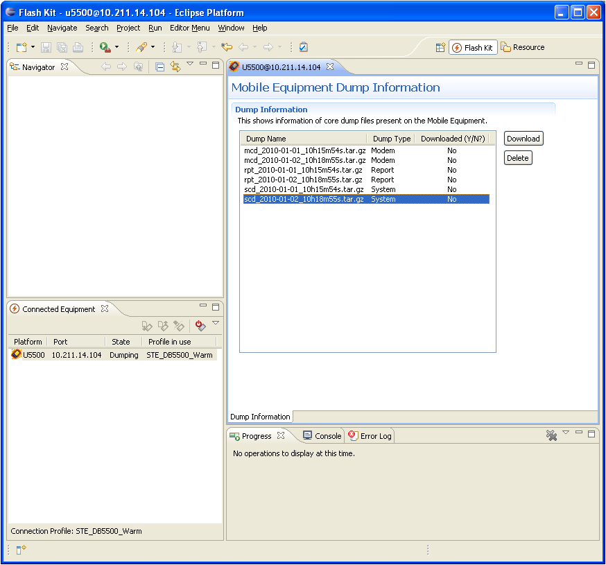

Handle dump task is used for downloading and deleting dump files from a mobile equipment. User can also set to perform the automatic download of a new dump created on a equipment. When a mobile is dumping, it will shows up in the connected equipment view in "Dumping" state.
Please make sure the preferences for dump handling are correctly configured as described in Flash Kit Preferences to perform automatic download.
Connect a mobile equipment and wait until it is in state "dumping". Right-click on the connected mobile equipment and select "Handle Dump". This will open the equipment editor with available dump files on the equipment.
Multiple files can be selected at a time from the list of files to download or delete. There are two ways to execute the download or delete of dump file task: